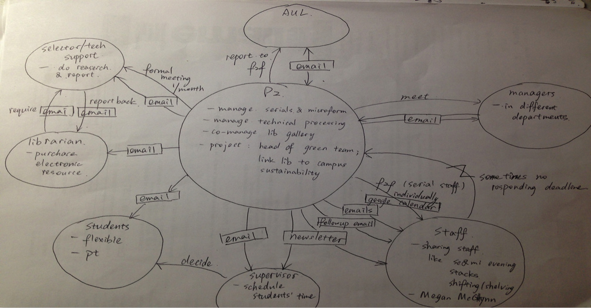
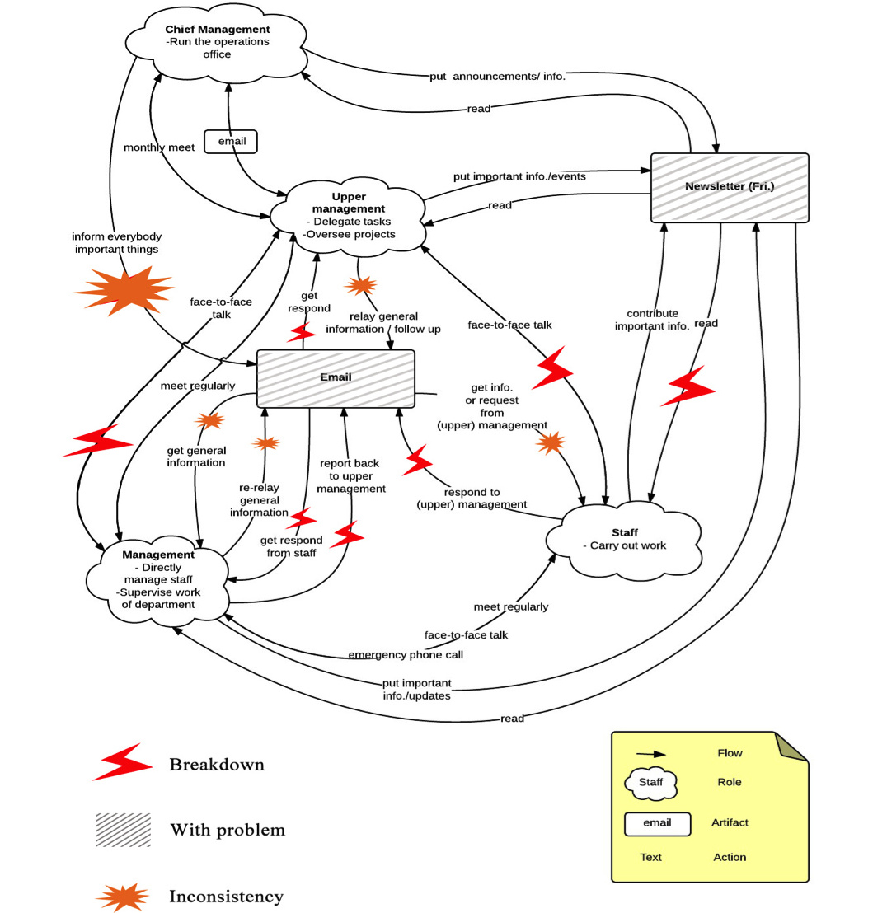
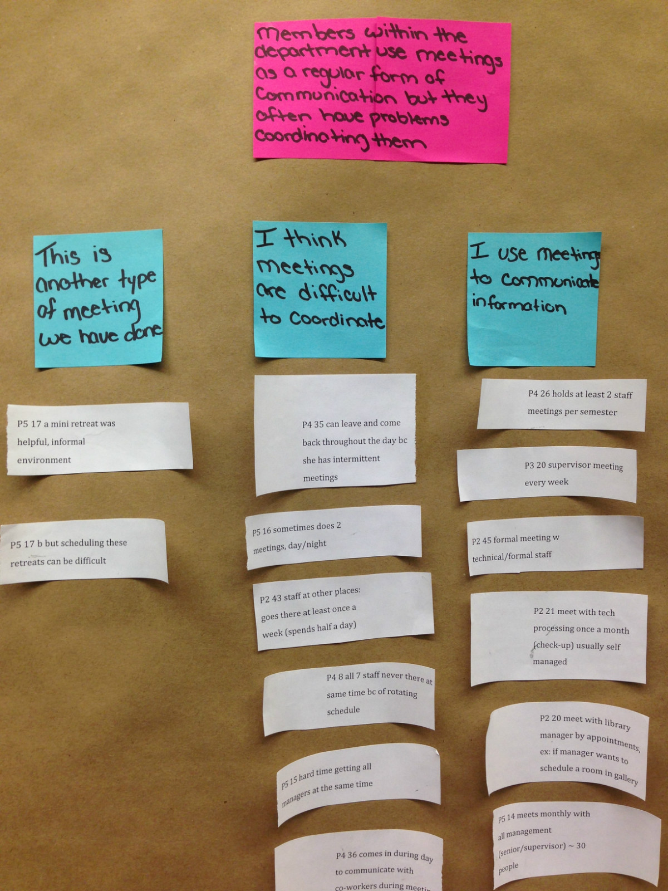
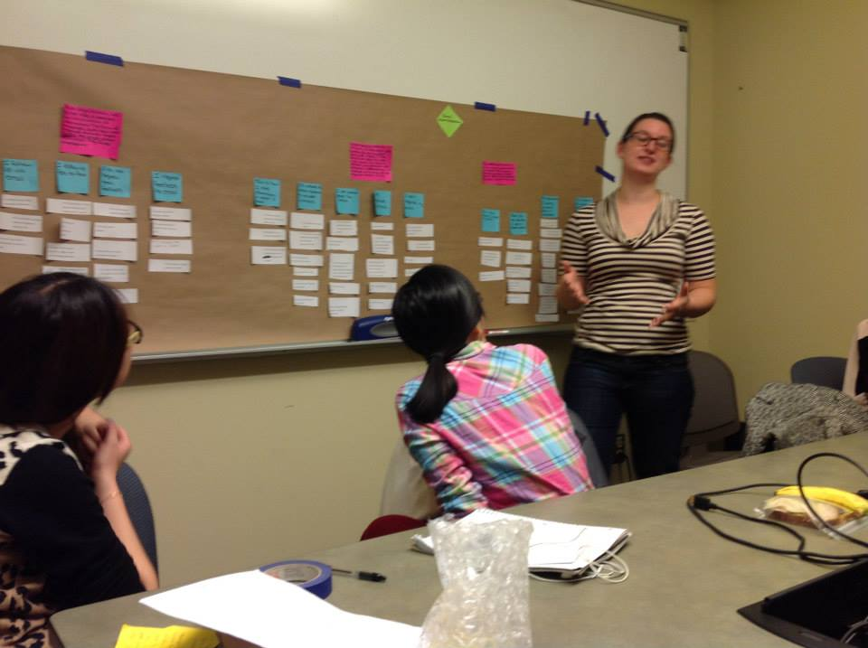
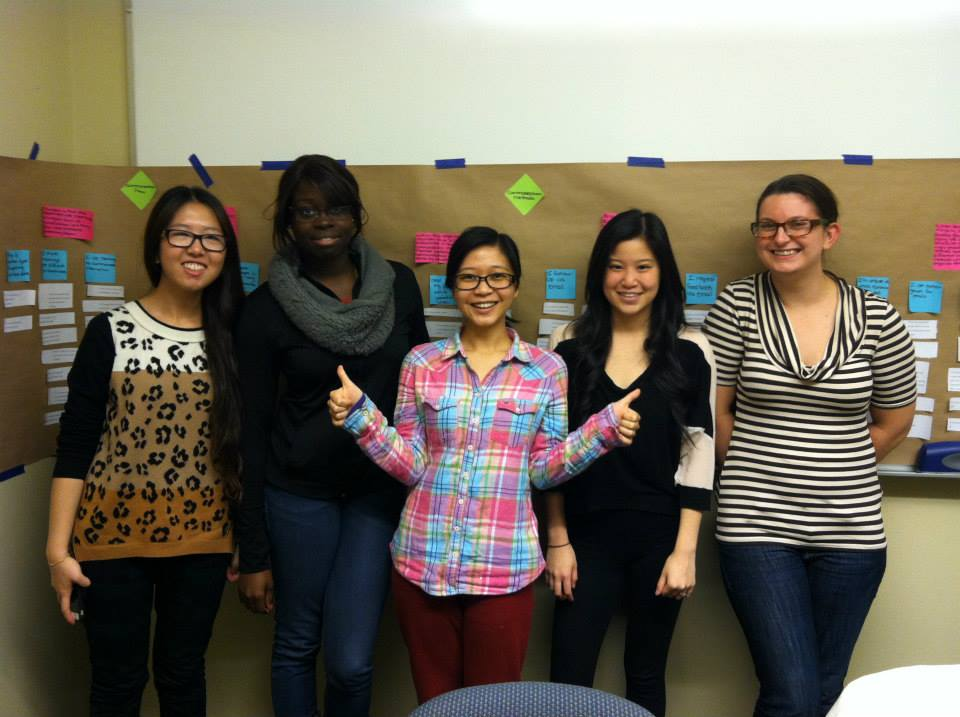

Portofolio of Yichi
Analysis of the Information Flow at the Operations Department of MLibrary


Operations Chart of Mlibrary
Problem Statement & Project Scope
The initial problem presented to us dealt with miscommunication of policies and general information. The complaint was that staff did not seem to be aware of all of the resources and activities available to them. Some staff felt as if they were not receiving information they should have, while other staff felt overwhelmed with the amount of information they were receiving.
The project purpose is to share findings and recommendations for how the Operations Department of MLibrary can improve its communication flow. The scope of this project was to analyze the organization’s methods of communication. Our project goal was to understand current communication patterns and identify areas in which modifications could improve efficiency. Our major findings and recommendations revolve around inconsistency throughout the communication flow, and also highlights that there is an open communication style that should be preserved.

Consolidate Models of Interviewees by me
Methodology
Skills: Interview, Interpretation, Affinity Wall
We utilized Holtzblatt et al’s Rapid Contextual Inquiry methodology, which emphasizes learning from interviews and through observations.
We interviewed six member of the organization to gain perspective from multiple vantage points. Our goal during these interviews was to observe each interviewee’s regular work habits and view how tasks related to communication flow were accomplished. Throughout this process we observed how some members organized their email and how some members utilized the intranet. The information gathered from these interviews allowed us to understand the current communication process.
After each interview our group conducted an interpretation session to analyze the information from the interviews and create diagrams and models that represent the information flow and show where breakdowns are occurring.
We also utilized a process tool called an affinity wall. The affinity wall allowed larger, more encompassing ideas to evolve from notes taken directly from the interviews. This tool allowed our team to discover patterns occurring across all interviews. We used the ideas discovered through the affinity wall to brainstorm and develop our recommendations for the organization.

Breakdowns in Communication
Findings
Skills: UX
Finding 1
The organization is committed to making sure all members feel included and promoting an open communication style.
Finding 2
Members in the organization are unclear about the existence and usage of a formal communication protocol, which leads to uncertainty about what communication method to use and how to use it.
Finding 3
Members of the organization are inconsistent in their knowledge and use of the Intranet.
Finding 4
There are inconsistent opinions about the newsletter’s value and formality.


Affinity wall

Affinity wall
Client Report
Skills: Short-term, Long-termRecommendations and more details can be reached from reading this report.